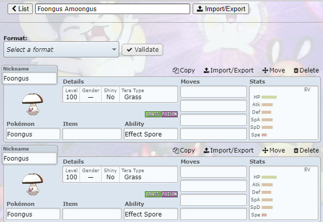
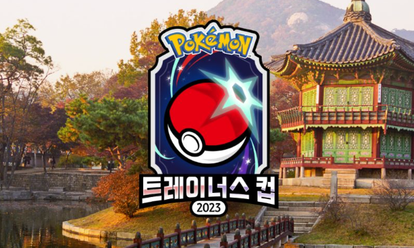

Pokémon
| |
Introduction | Common Information | Tiers in Competitive Pokémon |
Common Strategies | Reference |
|---|
|
Competitive Pokémon is a genre of the game series “Pokémon” made by the large game company Nintendo ®. Instead of the Player Versus Environment (PVE) elements introduced by the mainstream series, avid fans come together to fight each other in Player Versus Player (PVP) tournaments, special events/gatherings, or just for fun.
|

|
|---|
It is recommended that you begin with using a renowned website called Pokémon Showdown to build teams and try out different generations. Each release of a Pokémon game comes with its unique cast of Pokémon, so finding the right generation to play in can be key.
|
Competitive Pokémon is much like any other strategic game in that you must find your playstyle to excel. To find your style, it is recommended you try as many strategies and team synergies as possible. Here is a list of common team strategies as well as examples used by professional Video Game Championship (VGC) players. Remember, you aren't limited to popular strategies. You can try making your own and see what Pokémon work for you. |
 |
|---|
|  |
VGC, or Video Game Championships, are events held by game creators or enthusiasts that invite skilled players to compete in a tournament. These tournaments often have large audiences and hold a large prize. Watching skilled players play can help you increase your ability to play yourself and support these events. You can watch the archives of past tournaments here . |
|---|